Background
The problem
Existing animal shelters face excessive space constraints, compromising the physical and mental health of animals. These stressors create a prolonged recovery cycle, extending the animals’ stay and reducing their adoption chances.
Shelters should aim for a non-cyclic model — nurturing animals to prepare them for permanent homes. By studying strays’ habits and needs, this project leverages interactions with nature and humans to heal them.
The response
Set on a vast lawn with ample natural resources, the shelter gives stray dogs — its primary inhabitants — outdoor space for play, swimming and training, helping them overcome the trauma of homelessness. An on-site animal hospital offers isolation and treatment, and a fully transparent adoption center lets animals move on after recovery.
Pet-focused facilities for residents — an animal hospital, grooming and a pet-themed café — draw animal lovers in, encourage close human-animal contact, and generate operational income.
Site
From the city to the lawn between Jinji Lake and Dushu Lake — the model is placed at its real location and true size on satellite imagery.
31.2956° N · 120.6907° E
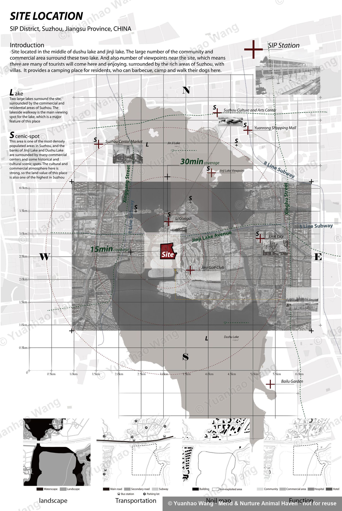
Between two lakes
The site lies between Dushu Lake and Jinji Lake in Suzhou Industrial Park — one of the most densely populated areas of the city, surrounded by communities, commercial centers and scenic spots.
The lakeside walkway is the main viewing spot of the area, and many residents already come here to camp, barbecue and walk their dogs.
Originally the lawn only had a narrow, vehicle-impassable path. A new driveway connecting to the main road was added, enabling direct delivery of supplies to the shelter and easing access for campers behind the building.
Research
Dogs as a social catalyst
Stray dogs suffer from illness, hunger, loneliness and fear; many people suffer from stress, monotony and isolation. Mapping both perspectives shows how the needs meet: dogs need treatment, food, shelter and care — people need to go out more, distract their attention and find companionship.
Therapy for both
The program is organised as therapy for people and animals alike: human therapy through adoption, physical therapy through outdoor activity space, psychological therapy through a pleasant living environment and treatment, and rehabilitation through socialisation training.
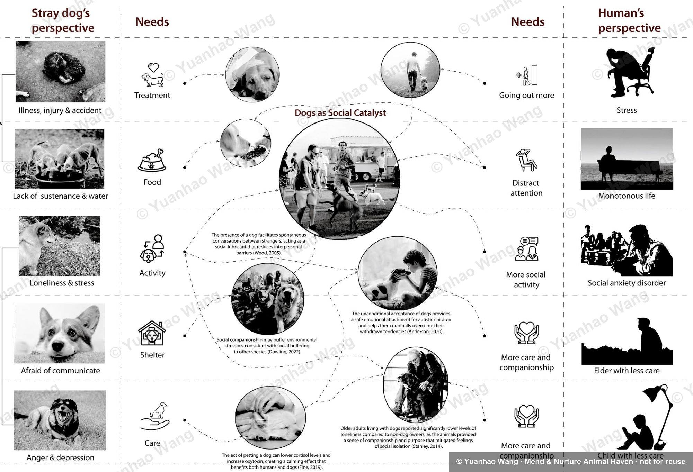
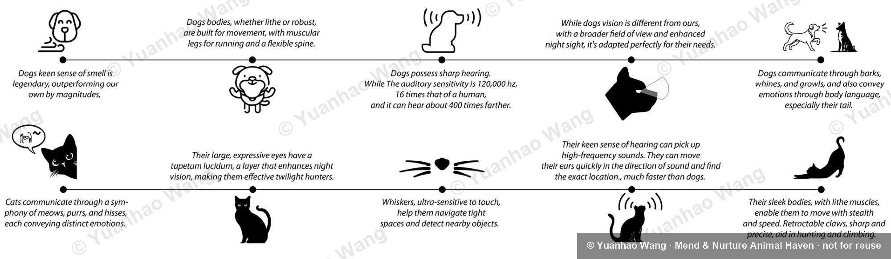
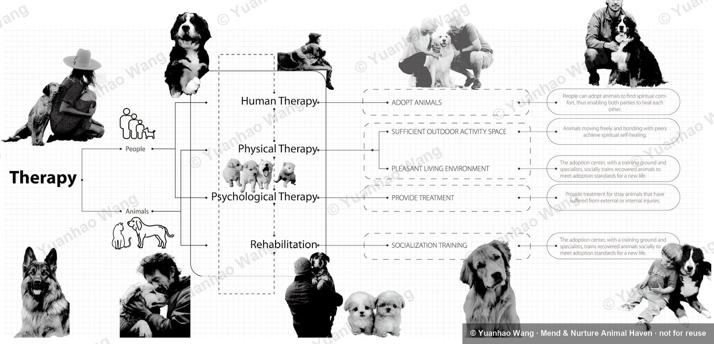
Animal behaviour
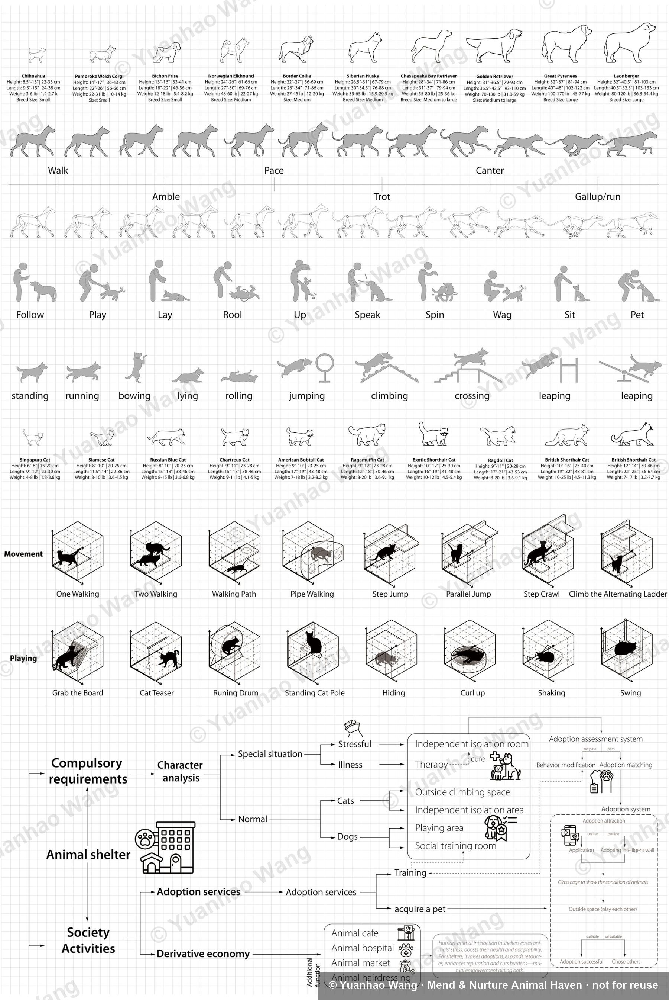
Designing from their habits
Dog breeds, sizes and gaits — from walk to gallop — and the ways cats walk, jump, climb, hide and play were studied to size spaces and design activity setups.
Every animal goes through a character analysis: stressed or ill animals are taken into isolation and therapy; others move on to climbing spaces, play areas and social training. The adoption system then matches them with people, while derivative services — café, hospital, market and grooming — sustain the shelter.
Plan
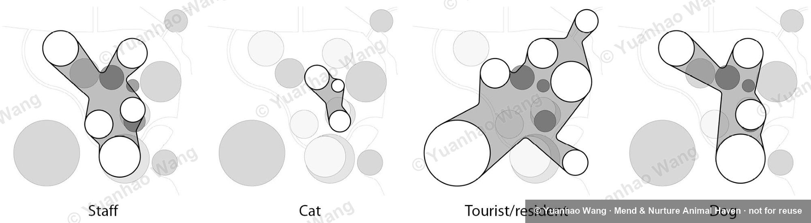
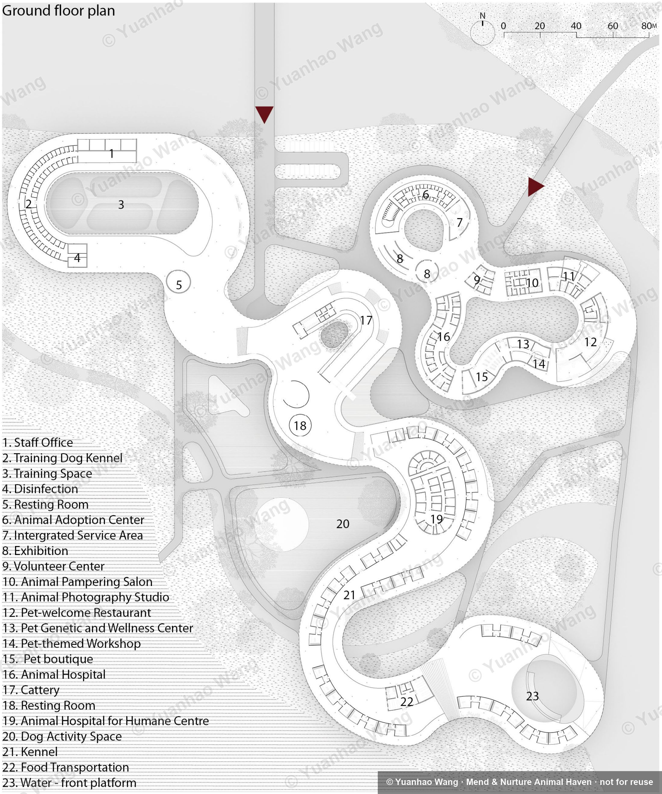
A winding sequence
The winding kennels boost visitors’ exploration interest, reduce dogs’ eye contact, minimise conflicts and improve their shelter life. Elevated catteries prevent cat–dog conflicts and give cats dedicated indoor activity and climbing spaces.
- Staff Office
- Training Dog Kennel
- Training Space
- Disinfection
- Resting Room
- Animal Adoption Center
- Integrated Service Area
- Exhibition
- Volunteer Center
- Animal Pampering Salon
- Animal Photography Studio
- Pet-welcome Restaurant
- Pet Genetic and Wellness Center
- Pet-themed Workshop
- Pet Boutique
- Animal Hospital
- Cattery
- Resting Room
- Animal Hospital for Humane Centre
- Dog Activity Space
- Kennel
- Food Transportation
- Water-front Platform
3D Model
Switch between Model, Realistic and Diagram styles, explode the layers, and read the program and stories on the building.
Waterfront & sections
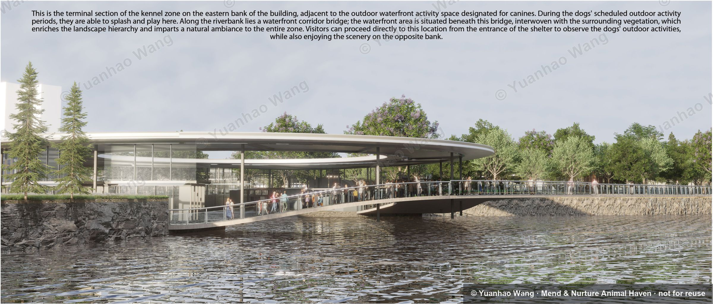
At the eastern end of the kennel zone, a waterfront corridor bridge runs along the riverbank. During their scheduled outdoor periods dogs can splash and play in the water beneath it, while visitors walk straight from the entrance to watch them and enjoy the view across the water.
The two long sections run through the kennels and courtyards. Levels range from −3.0 m at the waterfront to ±0.0 at ground and up to +10.0 m at the highest point of the roof.
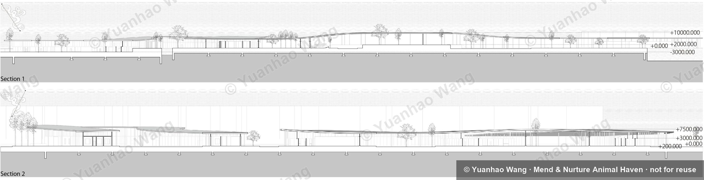
Experience
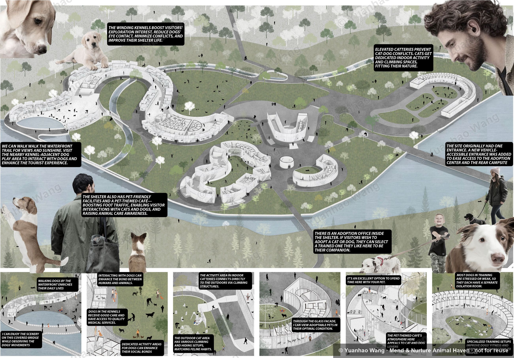
Structure & atmosphere
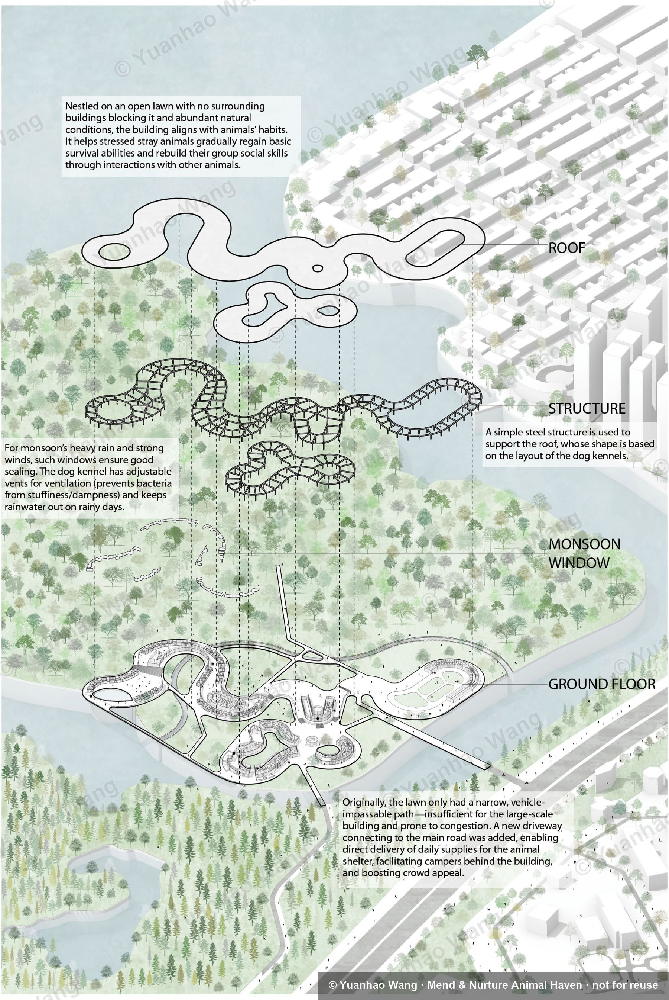
Roof, structure, window
A simple steel structure supports the roof, whose shape follows the layout of the dog kennels below.
For the monsoon’s heavy rain and strong winds, the windows are designed for good sealing; the kennels have adjustable vents to prevent stuffiness and dampness while keeping rainwater out.
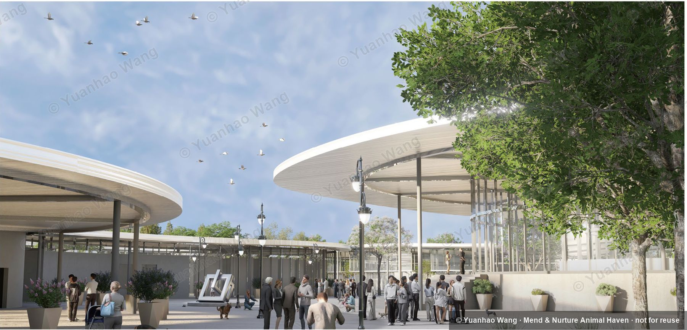
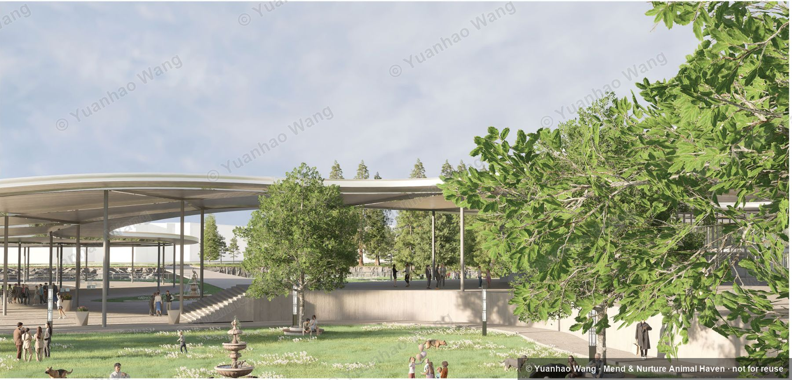
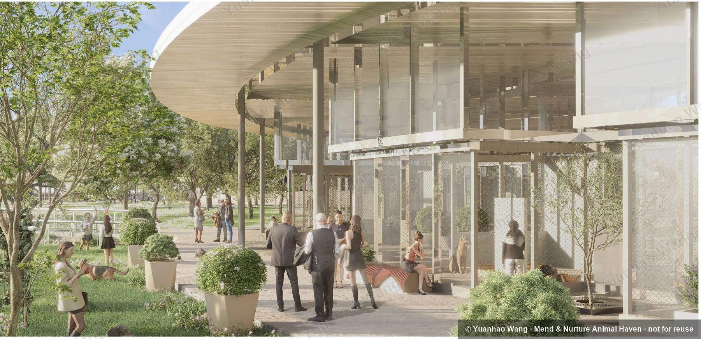